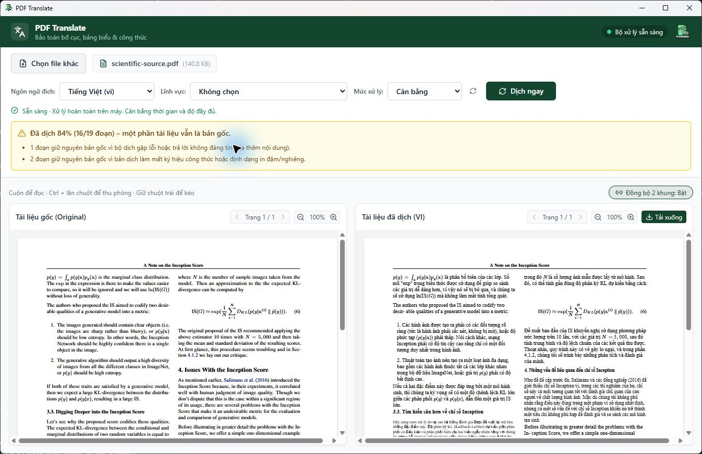

Hướng giao diện đã triển khai
Đây là bản xem trước thông điệp và trạng thái. Thao tác dưới đây không dịch tài liệu hoặc gọi dịch vụ. Bản ứng dụng thật nằm trong bộ Windows portable đã dựng.
Không tự đổi mức xử lý khi thiếu tài nguyên. Các quy tắc bảo vệ công thức áp dụng ở mọi mức.
Giao diện thật sau khi dịch
Ảnh kiểm tra trực tiếp từ bản Windows đóng gói: hai khung đối chiếu, cảnh báo tỷ lệ còn giữ nguyên và mức Cân bằng; không có lựa chọn tên AI.

Số đo trên cùng mẫu khoa học một trang
| Mức | Thời gian | Đoạn dịch | Ký tự toán giữ đủ |
|---|
| Nhanh | 27 giây | 12/19 | 123/123 |
| Cân bằng | 80 giây | 16/19 | 123/123 |
| Chất lượng cao | 160 giây | 19/19 | 123/123 |
Đây là số đo của mẫu và máy thử hiện tại, chưa phải cam kết chất lượng hay cấu hình tối thiểu.
Mở bộ kiến trúc